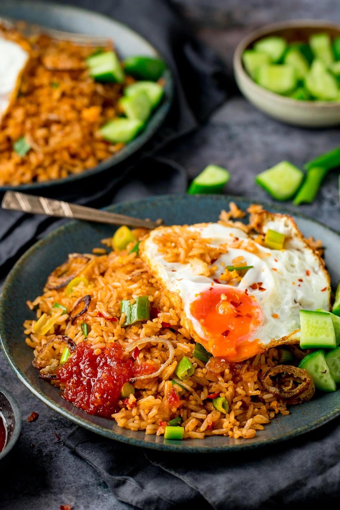

Nasi Goreng

Ingredients
- 4 tbsp vegetable oil
- 2 shallots, peeled and thinly sliced
- 2 tsp conflour
- 1 tsp shrimp paster
- 2 cloves garliv, peeled and minced
- 1 red chilli, finely chopped
- 1 tsp fish sauce
- 1 heaped tbsp brown sugar
- 1 tsp tamarind
- 1 tbsp tomato puree, paste for US
- 2 tbsp dark soy sacue
- 900g cooked long graice rice, ideally a day old rice in the fridge
- 5 eggs
- 5 spring onions, chopped
- 1/4 tsp salt
Instructions
- Heat 1 tbsp of the oil in a large wok or frying pan until hot.
4 tbsp vegetable oil
- Dust the shallot or onion slices in cornflour and add to the wok. Cook, for 5-6 minutes until browned and
crispy, then remove from the pan and place in a bowl.
2 shallots or 1 small onion, 2 tsp cornflour/cornstarch
- Turn the heat down to medium and add another 1 tbsp of oil to the wok and add in the shrimp paste, garlic, and
chilli. Heat for one minute until fragrant, then add in the fish sauce, brown sugar, tamarind, tomato puree, and
soy sauce and heat for a further minute.
1 tsp shrimp paste, 2 cloves garlic, 1 red chilli, 1 tsp fish sauce, 1 heaped tbsp brown sugar, 1 tsp tamarind,
1 tbsp tomato puree, 2 tbsp dark soy sauce
- Now add the rice to the wok and cook on a high heat. Use a spatula to ensure the rice doesn't stick to the
bottom of the pan, and move the rice around so that it's all getting reheated.
900 g (2 lbs) cooked long grain rice
- Once the rice is hot (this will take about 5 minutes), push the rice over to the side of the pan and crack one
of the eggs into the space. Making sure this bit of the pan is over the heat, fry the egg, giving a mix with the
spatula until the egg starts to cook and look scrambled.
5 eggs